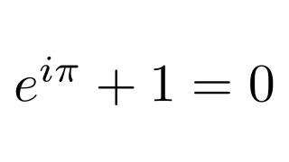
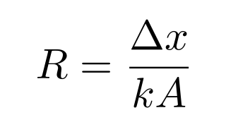

| Copyright | Written by David Himmelstrup |
|---|---|
| License | Unlicense |
| Maintainer | lemmih@gmail.com |
| Stability | experimental |
| Portability | POSIX |
| Safe Haskell | None |
| Language | Haskell2010 |
Reanimate.LaTeX
Contents
Description
Synopsis
- latexCfg :: TexConfig -> Text -> SVG
- data TexEngine
- data TexConfig = TexConfig {}
- latex :: Text -> Tree
- latexWithHeaders :: [Text] -> Text -> Tree
- latexChunks :: Traversable t => t Text -> t Tree
- latexCfgChunks :: Traversable t => TexConfig -> t Text -> t Tree
- latexCfgChunksTrans :: Traversable t => TexConfig -> (Text -> Text) -> t Text -> t Tree
- mathChunks :: Traversable t => t Text -> t Tree
- xelatex :: Text -> Tree
- xelatexWithHeaders :: [Text] -> Text -> Tree
- ctex :: Text -> Tree
- ctexWithHeaders :: [Text] -> Text -> Tree
- latexAlign :: Text -> Tree
- chalkduster :: TexConfig
- calligra :: TexConfig
- noto :: TexConfig
- helvet :: TexConfig
- libertine :: TexConfig
- biolinum :: TexConfig
- droidSerif :: TexConfig
- droidSans :: TexConfig
Documentation
TeX backends. They have different features and capabilities.
Instances
| Eq TexEngine Source # | |
| Ord TexEngine Source # | |
| Read TexEngine Source # | |
| Show TexEngine Source # | |
| Generic TexEngine Source # | |
| Hashable TexEngine Source # | |
Defined in Reanimate.LaTeX | |
| type Rep TexEngine Source # | |
Defined in Reanimate.LaTeX type Rep TexEngine = D1 ('MetaData "TexEngine" "Reanimate.LaTeX" "reanimate-1.1.4.0-6m3VjjlrewkDKgp9OhEwn8" 'False) (C1 ('MetaCons "LaTeX" 'PrefixI 'False) (U1 :: Type -> Type) :+: (C1 ('MetaCons "XeLaTeX" 'PrefixI 'False) (U1 :: Type -> Type) :+: C1 ('MetaCons "LuaLaTeX" 'PrefixI 'False) (U1 :: Type -> Type))) | |
TeX configurations can load packages and set up environments for tex scripts.
Constructors
| TexConfig | |
Fields
| |
Instances
| Eq TexConfig Source # | |
| Ord TexConfig Source # | |
| Read TexConfig Source # | |
| Show TexConfig Source # | |
| Generic TexConfig Source # | |
| Hashable TexConfig Source # | |
Defined in Reanimate.LaTeX | |
| type Rep TexConfig Source # | |
Defined in Reanimate.LaTeX type Rep TexConfig = D1 ('MetaData "TexConfig" "Reanimate.LaTeX" "reanimate-1.1.4.0-6m3VjjlrewkDKgp9OhEwn8" 'False) (C1 ('MetaCons "TexConfig" 'PrefixI 'True) (S1 ('MetaSel ('Just "texConfigEngine") 'NoSourceUnpackedness 'NoSourceStrictness 'DecidedLazy) (Rec0 TexEngine) :*: (S1 ('MetaSel ('Just "texConfigHeaders") 'NoSourceUnpackedness 'NoSourceStrictness 'DecidedLazy) (Rec0 [Text]) :*: S1 ('MetaSel ('Just "texConfigPostScript") 'NoSourceUnpackedness 'NoSourceStrictness 'DecidedLazy) (Rec0 [Text])))) | |
latex :: Text -> Tree Source #
Invoke latex and import the result as an SVG object. SVG objects are cached to improve performance.
Example:
latex "$e^{i\\pi}+1=0$"
latexChunks :: Traversable t => t Text -> t Tree Source #
Invoke latex and separate results.
latexCfgChunks :: Traversable t => TexConfig -> t Text -> t Tree Source #
Invoke latex using a given configuration and separate results.
latexCfgChunksTrans :: Traversable t => TexConfig -> (Text -> Text) -> t Text -> t Tree Source #
Invoke latex using a given configuration and separate results.
Apply the transformation to the LaTeX segments.
See also mathChunks, the transformation is (s -> "$" <> s <> "$").
mathChunks :: Traversable t => t Text -> t Tree Source #
Render math formula and separate results.
xelatex :: Text -> Tree Source #
Invoke xelatex and import the result as an SVG object. SVG objects are cached to improve performance. Xelatex has support for non-western scripts.
Invoke xelatex with "usepackage[UTF8]{ctex}" and import the result as an SVG object. SVG objects are cached to improve performance. Xelatex has support for non-western scripts.
Example:
ctex "中文"
ctexWithHeaders :: [Text] -> Text -> Tree Source #
Invoke xelatex with extra script headers + ctex headers.
latexAlign :: Text -> Tree Source #
Invoke latex and import the result as an SVG object. SVG objects are cached to improve performance. This wraps the TeX code in an 'align*' context.
Example:
latexAlign "R = \\frac{{\\Delta x}}{{kA}}"
Font configurations
chalkduster :: TexConfig Source #
Chalkduster font. Depends on lualatex. Font files are automatically downloaded.
latexCfgchalkduster"chalkduster"
droidSerif :: TexConfig Source #
latexCfgdroidSerif"droidSerif"